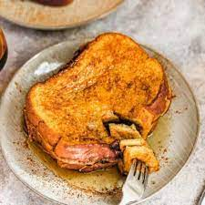

French Toast

Description
Ingredients
-
Eggnog: This recipe will work best with store-bought eggnog. You can also use homemade eggnog, if you like.
-
Eggs: Eggs add richness and flavor. Plus, they help bind the ingredients together.
-
Spices: This eggnog French toast is spiced with cinnamon and pumpkin pie spice.
-
Bread: Choose a sturdy loaf that can stand up to soaking, such as French bread.